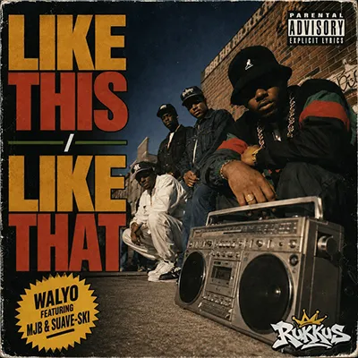
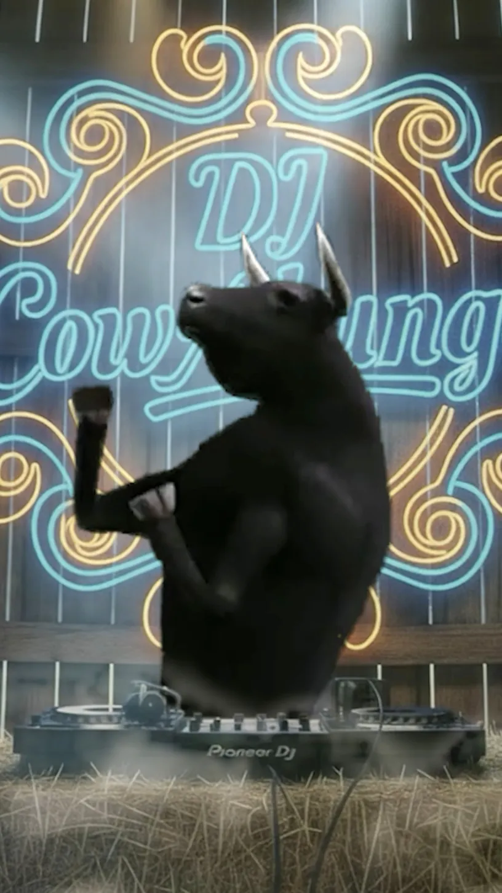
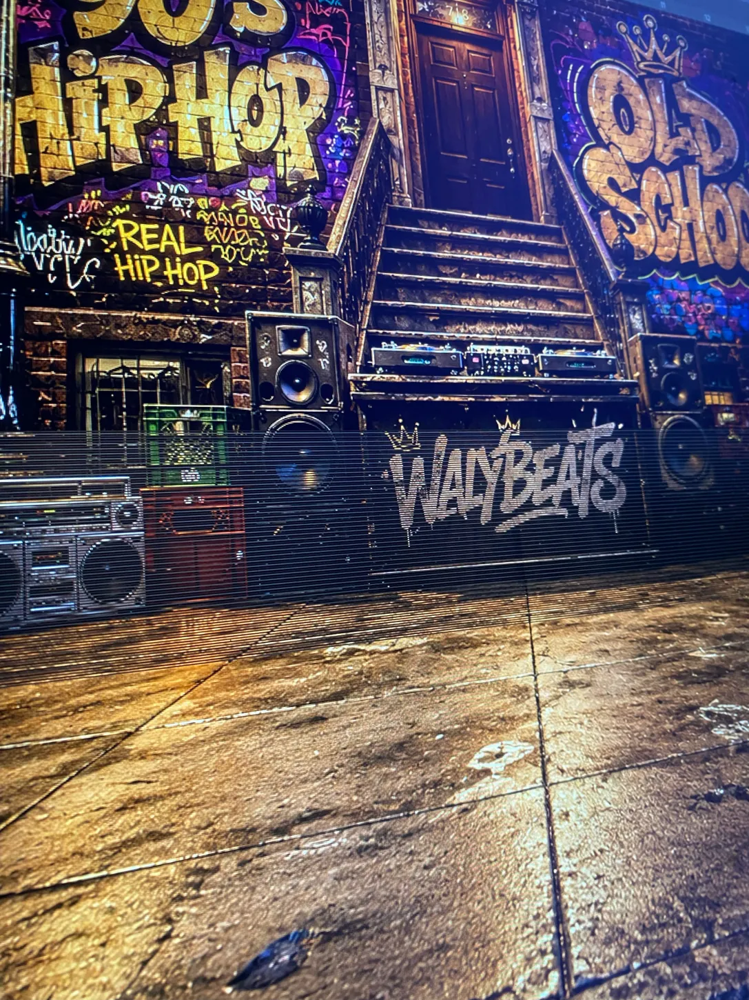
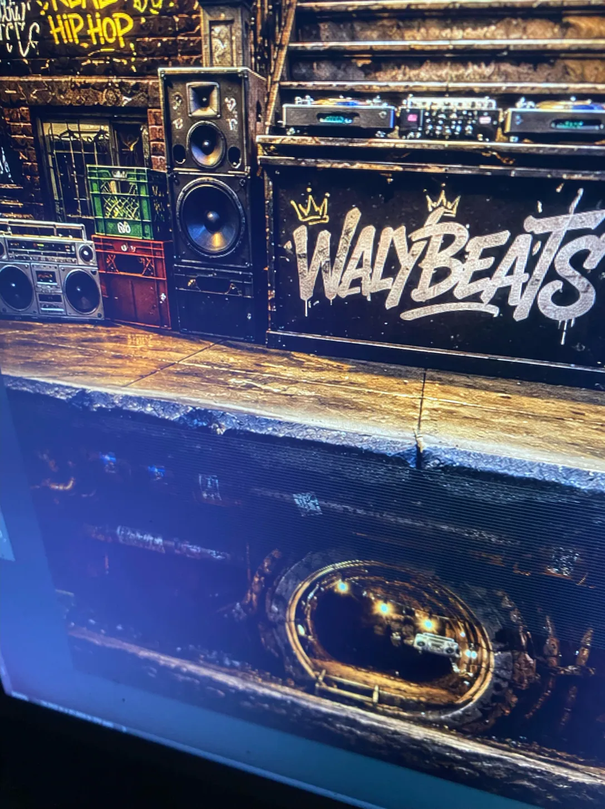
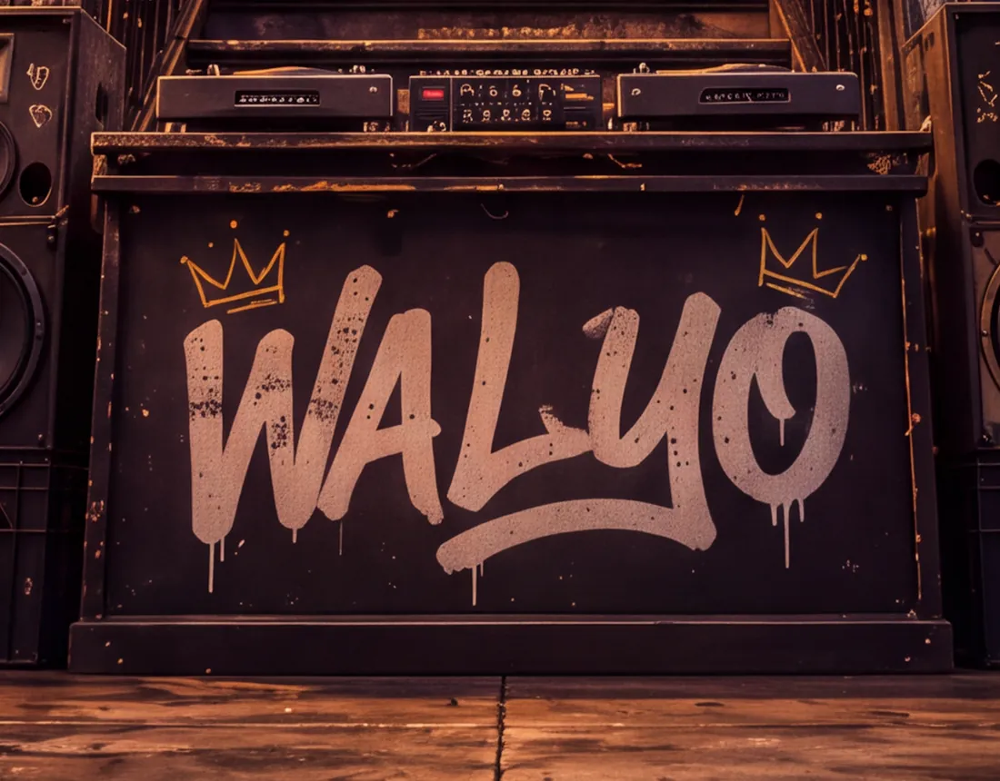
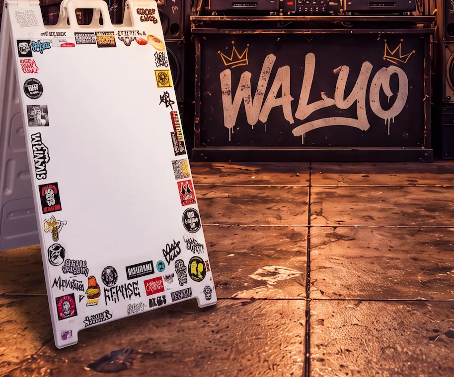
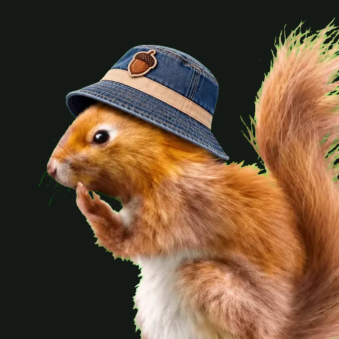
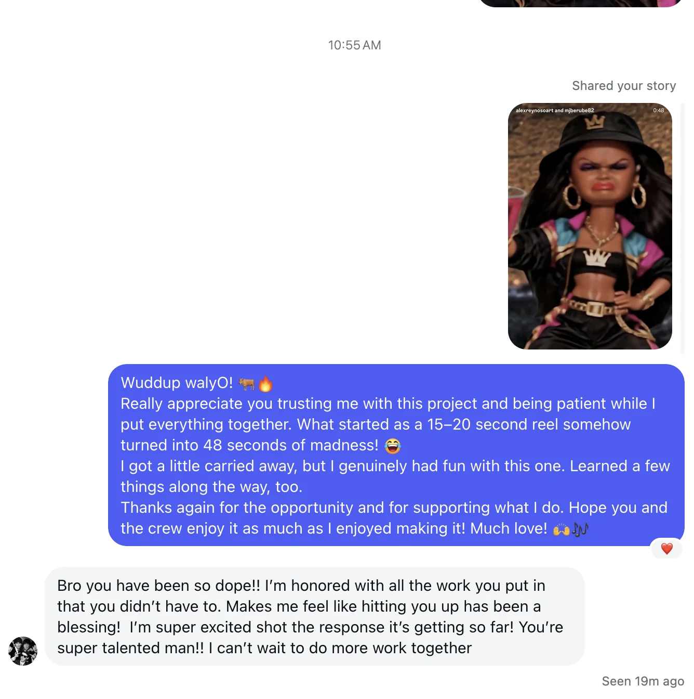

"That looks sick!!!"
The first screenshots landed. One thing needed fixing: the name. Lose "Beats." Just WalyO.
01 / Music Release Teaser · Friday, October 16, 2026
WalyO featuring MJB & Suave SkiA completed 48-second music visual built around a throwback 90s hip-hop track, a block party and one very unexpected cow.

02 / The Finished Visual
What began as a 15–20 second teaser became a 48-second animated trip through a 90s-inspired hip-hop block party. Watch the completed collaboration below.
FINISHED VISUAL. WalyO featuring MJB & Suave Ski · Visual by Alex Reynoso Art.
03 / The Ask
WalyO reached out with an upcoming single and an idea: could the song become part of one of Alex Reynoso Art's videos?
The first thought was a reaction-style clip. After hearing the track, the direction changed. Instead of reacting to the music, the goal became building a visual moment around it.
04 / The Turn
What started as a simple reaction-style idea became an original, 90s-inspired animated block party built around the track.
THE CREATIVE SWITCH
Put the track behind an existing video.
An original 90s-inspired animated block party.
A 15–20 second concept became a 48-second finished visual.
06 / Finding The World
WalyO wanted the teaser to feel connected to old-school hip-hop. Baggy clothes, hats, chains and attitude were part of the conversation. The final direction focused on bringing that energy into the environment and characters without forcing every detail into the animation.
The track needed a character. DJ Cowabunga already knew where the speakers were.

06 / First Look
The first work-in-progress preview turned the teaser into a place. Old-school hip-hop graffiti, speakers, DJ equipment and boomboxes filled the scene. WalyO's name became part of the environment itself.




The first screenshots landed. One thing needed fixing: the name. Lose "Beats." Just WalyO.
The artwork was corrected and WALYO became part of the wall in the visual world.
Character Development / Behind The Scenes
DJ Cowabunga brings the music. A boombox-carrying rabbit and a bucket-hat squirrel bring their own old-school energy. These are cropped character studies from the production, not the finished scenes.


A look at the visual development. These studies became part of the completed music visual.
07 / More Than A Clip
From graffiti-covered streets to DJ Cowabunga and the crew, the visual grew into a 48-second animated block party for WalyO’s Like This / Like That, released as a single on October 16, 2026.
WalyO featuring MJB and Suave Ski, presented with Rukkus Records.
The single was released Friday, October 16, 2026. The completed visual followed as part of the release campaign.
The finished music visual was shared as a social collaboration, following behind-the-scenes previews of the production.
08 / Client Reaction
After watching the completed visual, WalyO sent a heartfelt message about the care that went into the project and the possibility of working together again.
“Bro you have been so dope!! I'm honored with all the work you put in that you didn't have to.”
WalyO · Artist and collaborator
A message after seeing the finished visual. The full reaction is shown alongside it.

09 / The Track
A throwback hip-hop single brought into the Alex Reynoso Art world as a completed 48-second music visual.
09 / Follow The Artists
Your Turn
Music visuals, release teasers, green-screen composites and strange ideas that need somewhere to live are welcome here.
Start A Project →